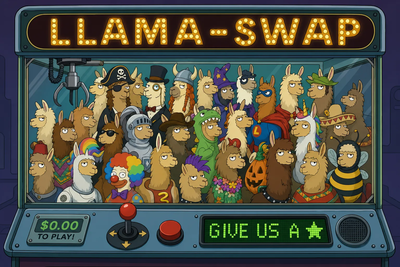
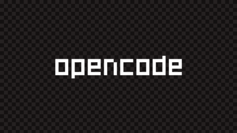
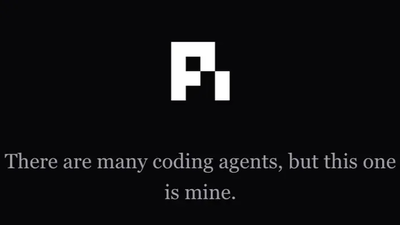
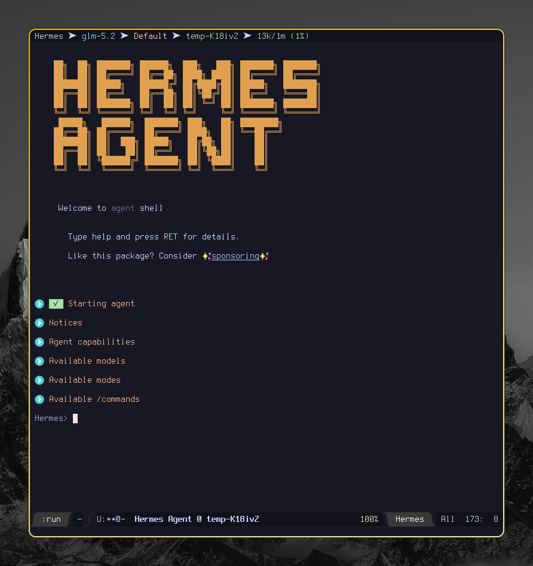

Oi, pessoal. Faz um bom tempo que não posto nada aqui. Como sempre, eu ando extremamente ocupado. Mas eu estou tentando buscar algum tempo pra falar com vocês com mais frequência, porque LLMs e IA generativa em geral está mudando absolutamente todo dia! Mesmo nos meses de maio e junho teve muito lançamento interessante, e eu não falei nada no meu blog.
O intuito desse post é falar a respeito de como todo o meu fleet de LLMs que uso para projetos pessoais MUDOU, e inclusive eu não necessariamente uso as mesmas ferramentas e soluções que falei com vocês no post anterior. Eu disse que traria mais informações sobre meu uso, e isso acabou ficando travado em rascunhos de posts que nunca concluí.
A questão é que as LLMs que uso no meu dia-a-dia mudaram RADICALMENTE. E com essa atualização, vou trazer para vocês algumas dicas, recomendações e coisas interessantes para que vocês possam trazer para os seus worflows também, em especial se vocês tiverem interesse em rodar LLMs localmente.
LLMs Cloud (para projetos maiores)
Antes de adentrarmos LLMs que rodam efetivamente em um computador mais modesto, eu quero conversar com vocês sobre os modelos que estou usando atualmente e onde, especificamente para lidar com meus projetos pessoais. Eu realmente tenho a perspectiva de que teremos em breve modelos que não vão exigir tanto do hardware e que vão servir muito pra programação, mas infelizmente isso é algo que fica difícil porque existe uma barreira diretamente relacionada ao TAMANHO do modelo, em termos de parâmetros1, que diz respeito a algumas características como a retenção de conhecimento dele em uma determinada área.
Isso significa que, pelo menos por enquanto, as reais powerhouses pra programação são os modelos que você paga e acessa em um ambiente cloud (estou desconsiderando outras áreas aqui, porque não tenho domínio dessa informação para elas).
Sendo assim, eu optei por me envolver com o uso de modelos de fronteira que sejam necessariamente open-weights2. O motivo pra isso é que eu não quero ter um gasto absurdo com IA. O valor de uma assinatura, atualmente, já é um gasto muito elevado, e mesmo para opções mais baratas, pode ser inclusive algo que vai aumentar (o que pode se manifestar primeiro em redução de limites).
Ollama Cloud
O que uso atualmente é um plano da Ollama Cloud. E isso é algo que preciso explicar, porque muita gente me pergunta: Ollama é, ao mesmo tempo, uma startup e um produto que você PODE instalar DE GRAÇA no seu computador, especialmente pensando em rodar modelos localmente. Mas poucas pessoas sabem que eles também têm uma cloud. E o legal da Cloud deles é que eles têm servidores nos EUA e na Europa3 e têm uma preocupação grande com privacidade. Além disso, eles praticamente só tem modelos OPEN WEIGHTS pra você usar.
Hoje, através dos servidores do Ollama Cloud, eu uso:
- GLM 5.2, da Z.ai;
- MiniMax M3, da MiniMax AI;
- Kimi K2.7 Code, da Moonshot AI;
- Nemotron 3 Ultra, da NVIDIA.
Como você pode ver, a maioria dos modelos que uso são chineses, e eu sei que existe uma certa desconfiança com relação a compartilhamento de dados com a China (como se os EUA também não coletassem, haha…), mas a questão aqui, especialmente para quem for residente nos EUA, é que esses modelos não têm conexão com os servidores dos fabricantes.
Essa é a beleza dos modelos open weights: Se você tiver hardware pra isso, você baixa, instala e usa. No caso, esses modelos são realmente muito grandes, então dificilmente você vai ter como rodar em casa algum desses modelos…
Mesmo assim, isso significa que provedores cloud podem justamente usar esses modelos e hospedá-los. Ou seja, barateamento do custo, e portanto valor mais justo pra gente4. ☺
LLMs locais
Das coisas sobre as quais mais sou perguntado, figura o fato de que eu atualmente consigo rodar modelos relativamente pequenos ou médios na minha máquina, com uma velocidade MUITO decente, especialmente para decodificação. Na verdade, quando menciono o que eu consegui de velocidade aqui, o pessoal acha até que é mágica.
Eu uso atualmente um laptop Dell G15 5530, com:
- Um processador Intel i7 13650HX, 20 núcleos, 4.90GHz, 13ª geração;
- Uma placa de vídeo NVIDIA GeForce RTX 3050 Laptop, com apenas 6GB de VRAM;
- Um SSD de meros 500GB;
- 32GB de memória RAM DDR5.
Como sistema operacional, uso Arch Linux e Hyprland como ambiente de desktop, que é muito bonito e leve. Interessante ressaltar também que, como historicamente drivers da NVIDIA têm seus problemas no Linux, eu desativei completamente os gráficos integrados do processador e uso apenas a placa NVIDIA para offload total de renderização. Nesse ponto, o ambiente mais leve na GPU faz muita diferença.
Aliás, deixa eu ser claro com relação a velocidade de execução, porque vamos falar agora dos modelos que rodo localmente:
- O momento de prefill é o momento em que o modelo vai processar o prompt que você enviou, e calcular a atenção sobre o contexto (a conversa até agora, as instruções inicialmente recebidas e também o que você está promptando). É um passo antes de emitir qualquer token, em que ele vai realizar cálculos em cima de uma estrutura chamada cache chave-valor (KV cache).
- O momento de decode é o momento em que a LLM está "respondendo", ou seja, emitindo tokens. Ela vai tomar o cálculo de atenção realizado anteriormente e vai começar a trabalhar em cima dele gerando um token após o outro com base em probabilidade.
Esses dois momentos são importantes para você medir a performance da sua LLM, em especial se você ainda não tiver "interagido" com ela na sessão atual (o que significa que seu cache KV estaria limpo).
O motivo para eu falar disso é porque nós temos uma velocidade de prefill e uma velocidade de decode. No meu setup, eu consegui alcançar uma velocidade de decode bem aceitável de 30 tokens por segundo, e um prefill que chega a ser lento mas não tanto assim.
Em definitivo, vou falar do utilitário que uso para alternar entre modelos sob demanda, dos backends para executar modelos, dos modelos que uso hoje, e explicar algumas dicas para conseguir boa performance em hardware tão limitado.
llama-swap

O primeiro componente é o llama-swap, um projeto muito legal que permite rodar vários tipos de modelos de IA generativa sob um único guarda-chuva. O mais importante desse componente é que ele permite que você faça alternância entre modelos de forma simples.
Recentemente o llama.cpp em si adicionou uma implementação que permite que você
faça algo similar, mas o interessante do llama-swap é que você pode integrá-lo,
inclusive, com outros backends como vLLM, e também com forks do llama.cpp, o que
é especialmente importante em um ambiente como o meu, algo que já vou falar a
seguir.
A configuração do llama-swap envolve você declarar um arquivo YAML com várias
especificações de como lançar o binário llama-server, e também outras
ferramentas que você vier a utilizar.
Abaixo você pode ver um exemplo de como eu faço o deploy do Ornith-1.0-35B. A
ideia é o seguinte: ele é um modelo grande em que inevitavelmente eu vou fazer
offload para a memória RAM "normal" (por não caber em 6GB de VRAM), então eu vou
rodar ele com ik_llama.cpp e dar a ele um timeout de inatividade de 15 minutos,
o que economiza dores de cabeça com tempo de prefill, dependendo da situação
(caso o modelo seja descarregado ou usado para, por exemplo, compactação).
Note que a configuração é basicamente muitos metadados e um comando para
executar o llama-server especificamente do ik_llama.cpp.
# --- llama-swap config (fragmento abridged) ---
macros:
models_dir: ${env.HOME}/.llama-models
templates_dir: ${env.HOME}/git/ai-dotfiles/llama-swap/templates
ik_llama_server: ${env.HOME}/git/ik_llama.cpp/build/bin/llama-server
# ... outras macros (sampler defaults, cache types, etc) ...
models:
ornith-1.0-35b:
name: Ornith 1.0 35B
cmd: |
${ik_llama_server} --port ${PORT}
--model ${models_dir}/ornith-1.0-35b/Ornith-1.0-35B-APEX-I-Compact.gguf
--fit
--fit-margin 1024
--ctx-size 131072
--temp 1.0
--top-p 1.0
--top-k 40
--min-p 0.02
--repeat-penalty 1.05
--reasoning on
--jinja
--chat-template-file ${templates_dir}/qwen-fixed-chat-template.jinja
--parallel 1
--parallel-tool-calls
--cache-type-k q4_0
--cache-type-v q4_0
--k-cache-hadamard
--v-cache-hadamard
--flash-attn auto
--defer-experts
--prefetch-experts
--spec-type ngram-mod:n_max=64,n_min=48,ngram_size_n=24
--metrics
filters:
stripParams: "temperature, top_p"
setParamsByID:
${MODEL_ID}:
chat_template_kwargs:
enable_thinking: false
temperature: 1.0
top_p: 1.0
${MODEL_ID}:think:
chat_template_kwargs:
enable_thinking: true
temperature: 1.0
top_p: 1.0
ttl: 900
capabilities:
in: [text]
out: [text]
tools: true
context: 131072
# ... mais metadados (metadata, source, architecture, etc) ...
# ... outros modelos ...
# ... (config-footer.yaml: hooks, matrix, evict_costs) ...
Isso é só um exemplo, mas resolvi pegar especificamente o caso do Ornith 1.0 35B
para que você possa observar o tipo de coisa com o qual tento me preocupar ao
descrever a configuração das flags para execução do llama-server de cada
implementação. Claro, a escolha desses argumentos e flags dizem muito a respeito
da capacidade do meu computador, de como eu quero que o modelo se comporte, mas
sobretudo, visando tirar o máximo de performance sem sacrificar capacidade de
contexto.
Não se preocupe demais se não entender as nomenclaturas; mais tarde vou falar de características específicas dos modelos e você vai entender com maior profundidade.
--fit/--fit-margin 1024
A flag
--fitsó existe noik_llama.cpp. Ela realiza offload inteligente de camadas da LLM para a memória RAM normal, mantendo na memória de vídeo (VRAM) apenas o que cabe. Uso também o--fit-marginpara reservar um espaço de 1024 MB na VRAM pra que a primeira flag não tente usar toda a VRAM da placa de vídeo. Assim, eu pago um pouco de velocidade em prol de conseguir continuar usando meu computador.Essa configuração é o principal motivo pelo qual eu uso
ik_llama.cppaqui, porque ele consegue fazer com que esse offload continue tendo boa performance, através de memory pinning e direct-memory access (DMA). E como modelos MoE (mixture-of-experts) não precisam de todas as camadas o tempo todo (já que dividem seus pesos em especialistas e só ativam alguns especialistas para cada token), a velocidade fica muito boa. Esse é o meu segredo para fazer um modelo de 16.5GB rodar relativamente bem enquanto ocupa só 5.1GB de VRAM.--ctx-size 131072
LLMs precisam executar o prefill e o algoritmo de atenção em uma parte da memória, que obrigatoriamente tem que ficar na VRAM, chamada de KV Cache. O tamanho desse KV cache determina a quantidade de tokens que seu contexto suporta. Aqui, eu prezo sempre por usar 131k. Com o restante das configurações, isso fica confortável e eu não passo por problemas que poderiam causar erros de OOM (out-of-memory).
Se você tiver problemas com essa parte, eu sugiro reduzir o tamanho do seu contexto, mas lembre-se que se você quer realmente um agente, menos de 64k de contexto vai ser um problema sério para você, em especial dependendo do harness que você estiver utilizando.
--reasoning on/--jinja/--chat-template-file
A primeira flag basicamente liga o modo thinking (reasoning, pensamento, o que você quiser chamar) antes de emitir a resposta. Veja que isso meramente ativa o suporte, e não necessariamente induz a LLM a emitir esse bloco.
Os demais parâmetros são indicadores de como fazer o parsing das respostas da LLM. A forma como uma LLM emite texto é através de criar marcadores que vão determinar onde começa e onde termina o pensamento, a resposta básica, as chamadas de ferramentas… e até marcadores de encerramento da mensagem sendo emitida. Pra gente, isso se apresenta como um marcador qualquer, mas para o vocabulário da LLM, geralmente isso se apresenta como um token.
Então o que a gente faz é basicamente ativar o suporte a templates Jinja, e geralmente eles vêm embutidos no arquivo GGUF do modelo. Mas você pode definir um chat template file caso queira usar um outro template Jinja com melhores ajustes, que é o que eu faço aqui… os modelos da família Qwen (base do Ornith) tinham um bug no formato das chamadas de ferramentas, alguém lançou esse template corrigido, e eu estou usando.
--cache-type-k q4_0/--cache-type-v q4_0/--k-cache-hadamard/--v-cache-hadamard
Essa parte aqui também é muito importante quando o assunto é o KV cache. Como mencionei antes, seu contexto também usa VRAM, e BASTANTE. Mas você pode quantizá-lo. Claro, você vai perder um pouco da precisão do seu contexto assim como também perde precisão em uma quantização de uma LLM, mas em contrapartida, vai usar muito menos VRAM.
O KV cache é um cache chave/valor (não vou me aprofundar demais em conceitos aqui), então o
ik_llama.cpppermite que você quantize as chaves e os valores separadamente. Aplicando uma quantizaçãoQ4_0em ambos, você reduz em 75% o tamanho do cache com relação à quantização original (F16). Então vale muito a pena.Adicionalmente, o
ik_llama.cpptem flags que te permitem aplicar uma rotação nos tensores de cache chamada Hadamard Rotation5, que preserva a qualidade deles enquanto permite comprimir o cache de forma ainda mais agressiva.Esses dois caras em particular são o segredo pra ter um modelo tão grande com um contexto tão grande rodando na minha máquina.
--flash-attn auto
Basicamente habilita Flash Attention caso a sua placa de vídeo suporte. Uma RTX 3050 como a minha e outras placas da NVIDIA suportam isso sem problemas.
Essa funcionalidade é importante porque, se fôssemos utilizar um processo "padrão" de atenção, seria necessário calcular uma matriz quadrada N*N, onde N seria a quantidade de tokens no contexto. Se a gente tivesse um contexto de 131k cheio, a matriz de atenção "pura" dele seria uma matriz 131k * 131k floats (F16). Ridiculamente grande, e não caberia na VRAM. E olha que isso é uma matriz intermediária que nem é algo pra ficar salvo em lugar nenhum.
O que o flash attention faz é basicamente não materializar essa matriz completa, e através de técnicas como tiling, fusão, e um softmax (algoritmo de atenção) incremental, ele permite calcular fragmentos da atenção incrementalmente e muito rapidamente na SRAM da GPU, uma memória pequena porém ainda mais rápida que a VRAM. Falando assim, parece até mágica. Junte isso também com quantização de contexto e as rotações… e você tem o pacote completo.
--parallel 1/--parallel-tool-calls
Esses parâmetros tratam de aspectos de paralelismo no modelo. A primeira flag foi um dos sacrifícios que precisei fazer: eu só tolero uma requisição por vez. O
llama-swapem si existe para fazer troca entre modelos sob demanda, mas quando você quer o mesmo modelo operando com até duas requisições ao mesmo tempo, por exemplo, você precisa aumentar o valor de--parallel, e pra cada execução paralela, tem que ter espaço para um KV cache a mais. Esse é o tradeoff que você tem que fazer. Se eu tivesse mais VRAM pra esbanjar, eu aumentaria esse número.A outra flag é algo bem mais trivial. Basicamente, a maioria dos modelos pra código e agentic coding hoje em dia tendem a enviar mensagens intermediárias pedindo para executar mais de uma ferramenta ao mesmo tempo, na mesma mensagem. A flag
--parallel-tool-callsbasicamente só prepara o parser da requisição para esse cenário, para que ele possa agregar e formatar as respostas usando o template Jinja fornecido.--defer-experts/--prefetch-experts
Essas flags aqui só funcionam para modelos MoE (mixture-of-experts), porque esses modelos operam através de operar com um especialista fixo que faz roteamento da atenção para outros experts que podem ou não estar na GPU ou no offload para a RAM normal, e com esses outros especialistas que normalmente "interpretam" coisas específicas.
Você pode deferir o carregamento de experts com
--defer-expertspara evitar que sejam carregados os experts menos utilizados para a VRAM e para a RAM. Adicionalmente, você pode pré-carregar também os experts mais prováveis de serem ativados no próximo token, usando--prefetch-experts.Essas flags juntas ajudam a aliviar um pouco a pressão do modelo sobre a RAM e a VRAM.
--spec-type ngram-mod:n_max=64,n_min=48,ngram_size_n=24
Speculative decoding (basicamente, acelerar a emissão de tokens através de uma "previsão" dos tokens mais prováveis a seguir), porém sem nenhuma das tecnologias mais novas como DFlash ou MTP. Não vou entrar em tantos detalhes de como essa flag funciona, mas basta você saber que é uma boa alternativa se você não tem VRAM a mais para carregar os drafters de DFlash e MTP (que são pequenos modelos extras carregados junto com o modelo-base).
--temp 1.0/--top-p 1.0/--top-k 40/--min-p 0.02/--repeat-penalty 1.05
Esses parâmetros são samplers, também conhecidos como parâmetros de inferência. Esses caras são bem importantes e são normalmente alguns dos parâmetros que você vai querer ajustar quando você baixar aquele modelo da moda que tá todo mundo falando bem, mas que magicamente só no seu computador parece ser uma porcaria e entrar facilmente em loop.
Vou deixar aqui uma pequena tabela baseada na documentação do Ollama para que você possa entender melhor o que cada um é.
Nome Descrição tempTemperatura do modelo. Aumentar a temperatura vai tornar o modelo mais criativo, mas mais suscetível a alucinação. top-pFunciona em conjunto com outros samplers. Alto, próximo de 1.0 = textos mais diversos; baixo = textos mais conservadores. top-kReduz a probabilidade de alucinação. Alto, próximo de 100 = mais diverso. Menor = respostas mais conservadoras. min-pAlternativa a top_p, manobra o balanço entre qualidade e variedade da saida (probabilidade mínima dos tokens).repeat_penaltyDefine a penalização para repetição de tokens. Mais alto (1.5) = mais penalidade; mais baixo (1.0) = leniência. Sempre procure no site da Unsloth e no model card do fabricante do modelo quais são os parâmetros de inferência recomendados, ou, se for um fine tune, procure pelos parâmetros do modelo-base, no pior dos casos.
E lembre-se: Se o seu modelo estiver entrando em loop e falando abobrinha, antes de assumir que é um modelo de má-qualidade (o que pode até ocorrer), tente primeiro ajustar algum parâmetro desses para valores que fazem sentido.
filters: stripParams/setParamsByID
Essas chaves já não estão mais no comando de execução do
llama-serverem si, mas são templates usados para alterar a forma como o modelo vai se comportar no momento da requisição, sem precisar carregar ou descarregar o modelo da memória.A chave
stripParamsespecifica que os valores de temperatura etop-p, caso informados na requisição do cliente, serão ignorados. Isso é porque, por mais que a execução dollama-serverseja feita com valores padrão, ainda assim é possível que o cliente, via requisição, altere esses valores quando o modelo for responder à requisição. Então estamos explicitamente ignorando-os e confiando só no nosso deploy.O outro ponto muito importante é o
setParamsByID. O que ele faz é basicamente mudar um ou mais parâmetros da execução do modelo, como se fosse algo sendo especificado via requisição. Só que, em vez de esperar que o usuário envie esses parâmetros de forma simples, isso é feito através do acesso a uma variante do modelo.A ideia é extremamente simples: A tag do Ornith 1.0 para que eu possa fazer requisições nele é
ornith-1.0-35b. Porém, se você fizer uma requisição para um modelo chamadoornith-1.0-35b:think, ele vai necessariamente habilitar o parâmetroenable_thinking.Lembra que eu disse que o
--reasoningapenas define se o modelo tem capacidade ou não de emitir blocos de pensamento? Pois então, o que habilita ou não esses blocos na maioria dos modelos é justamente oenable_thinking.ttl: 900
Talvez seja o parâmetro mais simples: trata-se do time-to-live do modelo, ou seja: quando o modelo ficar ocioso, ele ainda vai permanecer um tempinho ocupando processamento.
Para evitar que modelos grandes fiquem fazendo eviction toda hora, eu aumentei esse tempo para 15 minutos, e o Ornith foi um dos modelos que sofreu essas alterações.
Backends e ferramentas de inferência
Quando o assunto é rodar LLMs localmente, existem vários tipos de engines para fazer isso, até mesmo usando diretamente código em Python. Mas você vai querer escolher seu backend de inferência a dedo porque cada um tem seu nicho: performance, compatibilidade, facilidade de uso.
A seguir, vou descrever alguns dos backends que uso na minha máquina.
llama.cpp (upstream)
O llama.cpp é o backend de referência para hospedar modelos localmente, pensado
para consumidor final. Implementado em C++, usa um formato de arquivo para os
modelos chamado GGUF. Esse backend tem um amplo suporte a várias arquiteturas de
laboratórios variados (qwen, gemma, glm, cohere…), e implementa pontos muito
importantes como flash attention, quantização de cache KV, rotações de Hadamard,
soluções para acelerar a geração de tokens via speculative decoding (algoritmos
e suporte a decoders DFlash, MTP, n-gram, EAGLE-3…).
O llama.cpp também sabe fazer offload de parte do seu modelo para a memória RAM
normal e portanto você não precisa usar ele só para modelos que cabem totalmente
na sua VRAM, mas ele não é o melhor backend para ambientes limitados. De
qualquer forma, ainda assim ele é um excelente backend para o consumidor final,
como disse anteriormente.
Seria justo comparar o llama.cpp a outras soluções como SGLang e vLLM. Essas
duas outras engines servem modelos com foco em alta concorrência, sendo ideais
para cenários de múltiplas GPUs e requisições simultâneas, o que requer
otimização de throughput. Elas assumem que o modelo inteiro cabe na VRAM porque
foram otimizadas para diversas requisições por segundo sendo realizadas para os
modelos, e não para situações em que um modelo poderia ser grande demais para a
sua GPU. O llama.cpp age justamente na contramão disso, em cenários em que você
tenha uma única GPU, e que talvez ela nem seja o suficiente. Então ele
implementa ferramentas para lidar com isso (offload, quantização de KV cache,
etc).
Curiosamente, eu prefiro usar esse backend justamente quando eu consigo usar uma
quantização de modelo e um cache KV que caibam totalmente na minha
VRAM. Geralmente eu prefiro o ik_llama.cpp mesmo.
ik_llama.cpp
O ik_llama.cpp é um fork do llama.cpp otimizado para hardware limitado, em
especial quando offload para RAM normal é necessário. Exatamente por isso, as
flags para usar o ik_llama.cpp podem ser completamente diferentes do llama.cpp
normal. Acredito que a feature principal dele seja o fato de que você consegue
fazer o offload para RAM normal usando memory pinning6.
Em geral, a não ser que tenha alguma exceção, como por exemplo no caso de
incompatibilidade de arquitetura, eu uso o ik_llama.cpp para modelos
grandes. Especialmente se eles forem mixture-of-experts (MoE).
Ollama (local)
O Ollama é o backend para execução local de modelos da mesma empresa homônima, e
inclusive esse backend pode servir como proxy para os modelos hospedados na
cloud da mesma empresa. Ele já foi um fork maior do llama.cpp, mas hoje ele é
uma espécie de redistribuição e usa o llama.cpp diretamente como backend. Possui
um CLI amigável e implementa também uma API REST própria e outras APIs para
garantir camada de compatibilidade.
Em geral, o Ollama decide por si mesmo a maior parte da configuração de deploy
do modelo e não te deixa customizar com a mesma granularidade que o
llama.cpp. Para configuração fina de modelos, você precisa criar um Modelfile
(similar a um Dockerfile em sintaxe) e então dar um ollama create no arquivo com
a tag e o nome que quiser. Isso ajuda, mas não substitui você alterar
diretamente as flags de execução do próprio servidor.
Já usei bastante essas funcionalidades e até recomendo como ponto de entrada
caso você esteja com dúvida de como configurar modelos, mas abandonei o Ollama
como backend em favor de poder realizar ajustes mais finos e o controle que o
llama.cpp "cru" e seus forks me dão.
O Ollama também é capaz de orquestrar os modelos de acordo com a capacidade da sua máquina, carregando e descarregando modelos sob demanda.
O Ollama também é interessante com relação ao suporte a aceleração via MLX no Mac e também tem uma boa interface GUI para Windows. Macs têm sido bem receptivos ao uso de IA. Windows… bom, se for testar, boa sorte e me diga depois se conseguiu ter bons resultados…
LM Studio
O LM Studio é um projeto muito interessante. Ele é primariamente um GUI que te
ajuda a pesquisar, instalar e configurar modelos, tanto para chat quanto rodando
como servidor. Pense nele como uma interface e um facilitador para o uso do
llama.cpp, e uma boa porta de entrada para esse backend em específico, com
algumas coisas extras. Você também tem a oportunidade de realizar tweaks na
forma como o modelo é deployado com maior flexibilidade que no Ollama, mesmo
através da interface. E opcionalmente, ele tem uma ferramenta de linha de
comando também.
A única coisa que ele não faz é substituir a automação de carregar/descarregar
modelos sob demanda como o llama-swap e o Ollama fazem. Mas é uma excelente
aplicação, recomendo muito utilizar.
Modelos e quantizações
Depois de falar dos backends, vamos falar um pouco a respeito dos modelos que eu uso e dos meus critérios para selecionar a quantização adequada para um deles. Em geral, eu priorizo modelos que rodam com velocidade aceitável e que aguentam uma boa quantidade de contexto. Então vou apresentar a lista dos modelos que tenho instalados aqui, e depois vou falar sobre como escolher os quants para cada um.
Modelos principais
Os modelos a seguir são alguns dos que tenho instalados no meu fleet (meu conjunto de modelos de linguagem e visão). São os modelos que diria que são indispensáveis ou que são os meus preferidos.

O modelo estrela e o principal do meu fleet atualmente. Trata-se de um fine tune do Qwen3.5-35B-A3B, que atualmente é o melhor modelo de código que tenho. Veja que seu modelo-base está uma geração "atrás" do Qwen3.6 (falarei dele nas menções honrosas), mas mesmo assim, consegue ser melhor que ele nas tarefas de código.
Esse modelo não possui capacidade de visão, diferente do Qwen3.5 base, mas não faz falta porque o foco aqui é código, e nisso ele ganhou em todos os meus testes. O Ornith 1.0 35B atualmente é meu modelo principal para programação, quando os meus tokens da semana acabam…
De qualquer forma, o Ornith também tem uma quantização APEX I-Compact, então o
setup é bem parecido com o Qwen3.6-35B-A3B. Em geral, essa quantização, modelos
MoE e suporte no backend ik_llama.cpp é o que sempre vou considerar para modelos
que exigem offload dessa forma.

Eu já tive uma história de amor e ódio com esse modelo porque, quando usei ele pela primeira vez, foi via Ollama, com a quantização que tinha. E ele rodava com todo o hardware do meu computador no talo, usando muita memória RAM e quase nada de VRAM, porque eu não sabia configurar minha infraestrutura, e eu fazia uns 5 tok/s. De qualquer forma, depois de uma madrugada com todos os programas fechados e esse modelo configurado no OpenCode, foi esse cara que iniciou o meu projeto do harness que estou desenvolvendo, o Sprachspiel.
Mas agora tudo mudou aqui! Com uma quantização APEX I-Compact apropriada, finalmente consegui rodar ele de tal forma que tenho um desempenho aceitável e ainda assim consigo usar meu computador normalmente. A Z.ai manda muito bem, e depois desse modelo, veio a família do GLM 5.x, que é o que mais uso atualmente. Recomendo demais esse modelo para desenvolvimento em geral. É o meu favorito depois do Ornith 1.0.

A família de modelos Qwen3.5 foi muito importante quando lançou nesse ano de 2026, porque foi um dos primeiros indicativos de que poderíamos ter modelos pequenos realmente capazes de fazer coisas. Esse é um dos menores modelos da família, sendo maior apenas que um de 800 milhões (0.8B) e outro de 2 bilhões (2B) de parâmetros. Aqui, eu uso ele como um modelo muito capaz e muito rápido para tarefas mais simples.
Eu arrisco dizer que, se você precisa de um chatbot com capacidades de tool calling mais simples, o Qwen3.5 4B pode ser uma EXCELENTE opção. Caso você já tenha usado o GPT-4o, que foi o "xodozinho" de muita gente, o Qwen3.5 4B é um substituto direto para ele. E isso é um representativo dos saltos da indústria: estamos comparando um modelo grande, rodando em datacenter, de agosto de 2024, com um modelo minúsculo, rodando dentro do seu computador, de março de 2026. Em um ano e meio, a mesma capacidade desceu de centenas de bilhões de parâmetros (estima-se que GPT-4o tinha uns 200B) para apenas quatro bilhões.
Ah, todos os modelos da família Qwen3.5 (sem treinamento extra) suportam visão,
mas eu deliberadamente desativo a visão neles para não ter que carregar um
arquivo mmproj, economizando VRAM no processo.
Esse é o irmão relativamente maior e o último que compõe a família dos Qwen3.5 realmente pequenos. O 9B é significativamente melhor que o 4B em praticamente tudo, especialmente se você estiver falando de matemática e código (podemos fazer comparação direta entre ele e o GPT-OSS de 120B, então temos outra situação de centenas de bilhões de parâmetros reduzidos a meros bilhões).
O 9B pode ser usado como substituto do 4B quando você precisa que o modelo tenha um "raciocínio" mais apurado e mais qualitativo. Tamanho também é um bom indicador de retenção de quantidade de conhecimento de mundo, e isso é relativamente importante para ajudar o modelo a explorar caminhos diferentes, coisa que você vai precisar com código e com um agente.
Uso uma quantização Mixture-of-Quants (MoQ), o que é agressivo mas não perde tanto desempenho assim. No meu computador ele é mais lento que o 4B, e meu uso principal dele é quando preciso tratar algum assunto mais filosófico de pesquisa ou quando preciso de uma revisão de código em busca de bugs, algo com o qual ele surpreendentemente se dá muito bem, até marginalmente melhor que o Ornith 1.0 nos meus testes (isso é um resultado mais preliminar, ainda estou trabalhando nesses testes).

Gemma4 foi uma excelente surpresa da Google esse ano, uma família de pequenos modelos abertos e focados justamente em sistemas mais limitados. Digamos que seja a resposta ocidental direta à família Qwen3.5.
Ao contrário do que o nome sugere, os modelos E2B e E4B não significam que são 2B parâmetros e nem 4B parâmetros. Os "E" vem de parâmetros EFETIVOS. Não vou entrar em nuances aqui, mas isso significa que, na verdade, o E2B tem 4.6B parâmetros, mais especificamente, com 2B efetivos.
Esse modelo foi particularmente importante pra mim nas aulas que ministrei sobre
como criar agentes com LangChain porque, para pessoas com computadores
limitados, era mais interessante instalar Ollama em uma VM do Google Colab e
rodar esse modelo de forma persistente, já que ele é suficientemente bom com
tool calling. Além disso, eu uso uma quantização Q4_K_XL provida pela Unsloth,
mas que também foi feita em cima da variante QAT do Google, que é um tipo de
treinamento realizado já com o objetivo de o modelo ser quantizado em sequência,
o que significa que ele compensa já no treinamento a perda de precisão que vai
sofrer, evitando perda de qualidade.
Essa é a variante "effective" maior do E2B, sendo ela uma E4B. Portanto ela tem
4B parâmetros "efetivos", mas o seu tamanho real é 7.5B parâmetros. Uso uma
quantização Q4_K_M da Unsloth (veja que ela não é XL, que tornaria ela
incompatível com ik_llama.cpp, o backend que mais utilizo). O E4B é um modelo
mais poderoso e gosto de pensar nele como uma resposta direta ao Qwen3.5 9B,
porém ele ainda peca um pouco com relação ao modelo chinês.
De forma interessante, eu não uso a versão QAT desse modelo porque, nos meus
testes, uma quantização Q4 com QAT (executada no llama.cpp vanilla) não apenas
implicou em ganho algum de performance na minha placa de vídeo, como também
perdeu ligeiramente em qualidade da tarefa que usei como teste (algo que
potencialmente deve estar na margem de erro). Ou seja, como a versão QAT não
trouxe benefícios, optei pela quantização Q4_K_M PTQ da Unsloth, que além de
compatível com ik_llama.cpp, teve melhor performance nos meus testes.

Esse modelo é encantador. A Liquid AI é uma empresa muito voltada para a criação
de modelos MUITO pequenos e a incentivar a comunidade a construir coisas com
seus modelos, inclusive realizar fine tuning deles. Esse modelo, em especial, é
uma pequena obra prima: 8B de parâmetros totais, então é um modelo pequeno. Mas
com apenas 1B de parâmetros ativos. Ou seja, é MoE (então em extremo caso,
podemos fazer offload tranquilamente); é suportado no ik_llama.cpp; e ainda
existe quantização APEX I-Compact para ele. É o melhor de todos os mundos.
Preciso ser sincero com relação a um aspecto desse modelo: não use-o para código. Ele simplesmente não presta para programar. Ouso dizer que até mesmo um Qwen3.5 2B poderia ser melhor. E são dois os motivos: primeiramente, em apenas 8B, você não empacota tanto conhecimento de mundo e programação; segundo, por ser um MoE A1B, na prática ele vai agir a maior parte do tempo como um modelo 1B, e isso não é praticamente NADA em termos de parâmetros.
Esse modelo vai brilhar em qualquer situação em que você precisar de chat e de um agente capaz de realizar tool calls em uma longa cadeia de interações. Ou seja: você consegue usar ele como um pequeníssimo modelo em algo como Hermes Agent ou OpenClaw, assumindo que você só queira algo que responda suas solicitações, tome decisões relativamente elaboradas sobre certos dados, precise agir de forma simples em pipelines, etc. Até mesmo para um virtual pet que ainda seja capaz de realizar coisas úteis… Esse é o cara que consulta e remarca compromissos no calendário enquanto entende sua solicitação que foi feita com linguagem natural.
Como eu disse antes, eu desativei completamente a capacidade de visão (input de imagem) em todos os meus modelos maiores, porque isso gasta mais VRAM para carregar os encoders visuais e a camada de projeção, que efetivamente transforma a entrada da imagem para o formato que a LLM "entende".
A forma que eu uso para mitigar isso é ter bons modelos especialistas em visão. São também LLMs, mas como são especialistas em imagens, costumam se referir a elas como VLMs. É o caso aqui do Qwen3-VL: trata-se de um modelo um pouco mais velho (anterior ao Qwen3.5), mas que é especialista em lidar com imagens, sobretudo muito bom em gerar groundings, ou seja, delimitar e legendar elementos específicos em imagens.
Essa versão do Qwen3-VL em especial, que só tem 4B parâmetros, é
excepcionalmente boa em tudo isso, sendo meu modelo de visão mais confiável do
fleet para essa tarefa. Quando eu preciso de algo do tipo, eu controlo meus
harnesses pra que eles redirecionem tarefas de reconhecimento de elementos via
visão computacional para o Qwen3-VL, e o llama-swap trata de descarregar uma LLM
pra colocar ele no lugar e responder à requisição, e vice-versa. Obviamente você
pode perceber que isso tem um impacto em performance e acaba causando um cache
miss, mas bem, quem não tem cão, caça como gato…
O GLM-OCR é um lindo e pequeníssimo modelo criado pela Z.ai (mesmos criadores do GLM 5.2) que é especialista em leitura de documentos, e também é capaz de extrair tabelas formatadas e fórmulas. É uma VLM, portanto, com apenas 940M de parâmetros (menos de 1B!). Cabe inteiro na VRAM, quase não precisa de cache, etc.
O uso dele é extremamente limitado e ele tem também formas muito específicas de ser chamado, você não vai passar textos e mais textos de prompt para ele. Ele não foi treinado para isso. Então, é basicamente um utilitário de propósito muito específico.
O legal de você ter um modelo como o GLM-OCR é justamente o fato de ele ter um tamanho de 1.4GB, não precisar ser quantizado, não usar praticamente NADA de memória de vídeo, e substituir uma stack inteira de extração de dados de documentos que poderia ser feita com Tesseract, Poppler ou bibliotecas desse tipo. Vai te servir para a grande maioria das situações. Apenas crie uma aplicação ou pipeline, carregue o modelo, e faça ele trabalhar para você digitalizando documentos. Simples e confiável.

Esse modelo aqui é interessante demais. Trata-se de um modelo capaz de realizar tradução de 33 línguas e cinco dialetos, totalizando 38, feito pela Tencent. Atualmente é o modelo que eu uso para tradução de texto.
O legal dele é justamente ter um tamanho de 1.8B, então não faz nem cócegas na minha máquina. Todavia, o grande problema desse modelo é que ele não tem muito conhecimento de mundo, já que é tão pequeno. Se você precisar de algum modelo que exija uma tradução com mais nuances da língua que você estiver traduzindo, recomendo dar uma olhada no TranslateGemma, que tem suporte a 72 línguas e tem tamanhos de 4B ou 12B, a depender da sua necessidade.

Esse modelo, quantizado a 1-bit, e o modelo Ternary (do qual vou falar a respeito mais tarde), saíram enquanto eu ainda estava escrevendo esse post, então tive que dar uma parada e testá-los. E eu devo dizer, são marcos INCRÍVEIS.
O Bonsai 27B 1-bit é uma quantização do Qwen3.6-27B muito especial, feita pela PrismML, que comprimiu o modelo de tal forma que ele tivesse o tamanho de um modelo de 4B de parâmetros com quantização Q4.
Uma quantização tão extrema é excelente porque fornece para a gente uma prova de conceito de que é possível ter modelos com tamanhos ainda menores no disco e na memória, mas com a mesma quantidade de parâmetros de um modelo ainda maior.
O Qwen3.6-27B é atualmente o estado da arte para os modelos locais, e agora, se você tiver uma placa de vídeo de 8GB, pode usufruir desse modelo rodando em uma velocidade decente e com um contexto longo! O Bonsai ainda não é excelente para iterar sobre tarefas de edição de código por um longo período7, mas a PrismML promete mitigar isso no futuro.
Importante: para conseguir as velocidades aí acima, eu precisei reduzir o contexto dele para 32K. Isso realmente não é muito. Eu diria que menos de 64K já inviabiliza o uso de um modelo em um agente.

Esse é um pequeno modelo da InternScience que saiu pouco depois do seu variante 35B-A3B. Como o variante maior, é um fine tune do Qwen3.5-4B. Mas o interessante desse modelo é que ele apresenta alguns incrementos interessantes com relação à sua base: foi treinado para comportamento agentic e de long-horizon, ou seja, foi feito para servir como um agente capaz de operar de forma autônoma por muito tempo, em cima do mesmo prompt.
Esse modelo, porém, não é o melhor modelo para código da sua categoria. Eu recomendo muito esse modelo caso você esteja interessado em pesquisa e contexto científico. Nos testes em que fiz, dei a ele uns quatro PDFs diferentes e pedi para ele fazer uma síntese e amarrar os conceitos entre os quatro, e ele executou essa tarefa com maestria. Também fiz um outro teste em que pedi para que ele pesquisasse na internet e categorizasse as fontes em um relatório e também em um CSV com bastante rigor, e ele executou todas as tarefas com perfeição segundo o meu critério, e por bastante tempo.
Menções honrosas e modelos auxiliares

O modelo "estrela" para execução local em hardware mais limitado, criado pela Alibaba, da notória família Qwen de modelos cujas versões open-weights são adoradas pelo mundo todo. É o maior modelo "de fábrica" que tenho, e em geral funciona muito bem para tudo, sendo um modelo grande com boa performance. Sua arquitetura é baseada no Qwen3.5 de mesmo tamanho, mas ele recebeu treinamento extra para agentes e para execução de longo tempo.
Para o deploy do modelo ficar mais leve, eu deliberadamente desativei a
capacidade de visão dele. Isso é um ponto importante, porque significa que não
precisamos carregar tensores mmproj para tratar o input de imagem, fazendo o
modelo precisar de bem menos memória em geral para carregar, e permitindo um
contexto muito maior.
Esse modelo tem uma arquitetura MoE (mixture of experts), o que significa que,
dos 35 bilhões de parâmetros no modelo, nem todos estarão ativados ao emitir
cada token, mas sim apenas os experts para aquele token a ser emitido. Isso nos
dá uma vantagem em sistemas mais limitados: acaba se tornando possível para a
gente deixar os "experts mais importantes", ou os principais, na placa de vídeo,
e o resto a gente faz offload para a memória normal. Ou seja, se são 35B, com 3B
ativos (por token), então o modelo vai acabar se comportando, em maioria, com
uma velocidade de um modelo de 3 bilhões de parâmetros, o que é muito rápido no
meu computador. Junte isso ao ik_llama.cpp como backend, feito especialmente
para sistemas mais limitados, e você pode realizar memory pinning, o que permite
que a GPU se comunique diretamente com as partes da memória RAM em que os
experts estão carregados, via DMA. Esse é o segredo da mágica dos 30 tokens por
segundo de decode com esses modelos MoE.

O lançamento desse modelo foi bela supresa. Trata-se de um modelo relativamente leve e confiável para código, que uso esporadicamente para tarefas pequenas. O único defeito dele é ser grande demais em comparação com o Ornith e o Qwen3.6, o que significa que eu acabo preferindo os outros dois, mas é uma boa opção, especialmente quando você precisa de um código analisado por uma IA diferente, como uma espécie de "segunda opinião". Criado pela empresa canadense Cohere.
Esse modelo é meio engraçado. Ele é um fine tune do Qwen3.5-35B-A3B, na mesma pegada do Ornith 1.0 35B. Porém, apesar de ele ser decente em programação (ficando atrás do Ornith e do Qwen3.6 em testes que fiz aqui), ele aparentemente foi feito com a pretensão de ser um orquestrador de outros modelos. Por isso acredito em utilizá-lo para planejamento e distribuição de tarefas.
Mas meu computador dificilmente roda um modelo ao mesmo tempo, então o Agents-A1 ficou para outra oportunidade.

Esse é um modelo especialista em vision, sendo portanto algo que a gente pode chamar de VLM também. Antes de usar o Qwen3-VL, esse era o modelo que estava utilizando, e inclusive ele é rápido o suficiente para que eu consiga usar uma quantização Q5 em vez de Q4 (o que significa uma ligeira melhor qualidade). Recomendo como uma alternativa mais lightweight, para um especialista em visão.
Esse modelo é bem interessante, porque ele não é um modelo para chat nem para agente. Trata-se de um World Model. Esse tipo de modelo foi feito para renderizar estados de um certo domínio após a aplicação de certas ações sobre um estado anterior. No caso específico do Qwen-AgentWorld, a ideia é fazer isso com uma LLM clássica treinada do zero para isso8.
Eu diria que existe muito espaço pra esses modelos, por enquanto como modelo de apoio para construção de agentes, mas por enquanto não temos adoção nem uma compreensão robusta da maioria sobre o potencial desses caras.
Esses modelos são muito legais, e na verdade são um conjunto de pequenos
modelos. Os LFM2.5-VL são modelos especializados em visão computacional e que
inclusive entendem groundings (enquadramento com coordenadas exatas de elementos
em imagens). Existem variantes de 450M e 1.6B parâmetros, e em especial uma
variante extract para esses dois tamanhos, que responde só com JSON.
A Liquid AI recomenda inclusive fazer fine tuning dos modelos deles para as suas
necessidades, e eu consegui inclusive fazer fine tune do LFM2.5-VL-450M-Extract
para que ele fizesse reconhecimento e groundings de mãos em imagens, e inclusive
usando esse mesmo hardware limitado que tenho! Recomendo bastante a experiência.
Esse modelo aqui é exatamente a mesma coisa do Bonsai 27B com quantização de 1-bit, a diferença é que ele usa uma quantização em trinário. Se você tiver um pouco mais de hardware para ceder para execução de um modelo como esse, é interessante que você experimente essa variante porque ela tende a ter uma qualidade melhor, sobretudo em termos de codificação. Todavia, a PrismML recomenda mais a variante de 1-bit justamente porque o objetivo é vencer a constraint de tamanhos, em especial quando o assunto for rodar modelos em celulares e dispositivos embarcados.

Diferente dos outros modelos, esse aqui é um modelo para gerar embeddings. Esse tipo de modelo é particularmente interessante quando o assunto é RAG, indexação, pesquisa semântica, etc. O legal especificamente desse modelo é que ele foi treinado com uma técnica chamada Matryoshka embeddings. É meio complicado explicar do que se trata isso, mas imaginando que o embedding seja um grande vetor multidimensional em que cada valor dele corresponda mais-ou-menos a um conceito semântico específico para a LLM, esse tipo de treinamento faz com que o modelo priorize as dimensões de maior carga semântica para o início do vetor. Isso significa que, se for necessário descartar valores ao final do vetor de embeddings, você pode fazer isso sem perder tanta qualidade no embedding.
O valor de encoding que registrei ali em cima é bem alto, como podemos ver, e o mais legal disso é que é um valor CPU-only. Eu nem gasto a minha placa de vídeo quando o assunto é rodar modelos de embedding.
Mais um modelo pequeno da Liquid AI, dessa vez para gerar embeddings também. Mais uma vez, é o tipo de modelo que eu executo CPU-only. Veja que ele tem uma diferença considerável na performance, mas isso também tem a ver com o fato de que o embedding dele tem mais dimensões (1K).
Modelos de difusão (geração de imagem)
Os modelos a seguir não são modelos que rodam normalmente na minha máquina, porque pressupõem que você tenha uma certa infraestrutura para executá-lo. Talvez você se dê bem usando algo como ComfyUI para rodar esses caras, mas para conseguir rodar por aqui, eu fiz uma verdadeira gambiarra vibecodada (hehe), usando o Hermes Agent (discuto mais a seguir), de tal forma que o modelo opera em "etapas" e vai descarregando da memória o que não precisa9.
Essa ferramenta que criei, e que chamei de diffuse, nada mais é que um wrapper
feito em Python que tem a função de invocar o backend correto para executar
qualquer modelo (sd.cpp na maioria dos casos, e às vezes algo custom como
gemlite). Além disso, como alguns dos modelos dependem de uma escrita cuidadosa
do prompt, escolhi criar um mecanismo de facilitar a melhoria dessa escrita,
através de um parâmetro --enhance, que vai modelar o prompt usando uma das LLMs
anteriores que já mencionei.
De qualquer forma, pude atestar que esses modelos funcionam muito bem com o meu setup modesto, dado que você tenha um pouco de paciência com o tempo de geração dessas imagens.

Esse é um excelente modelo não apenas para geração de imagens, mas também para edição delas: você pode fornecer uma imagem como exemplo e ele vai gerar uma nova imagem usando-a como base, de acordo com o prompt que você fornecer.
As únicas ressalvas que faço são o seguinte: primeiro, ele tem uma tendência a
gerar imagens com uma iluminação e um detalhamento mais cartunesco; segundo, por
algum motivo, ele tende a envelhecer, e muito, as pessoas que for gerar. Isso é
contornável com um bom trabalho de prompting, mas eu precisei embutir um modo
enhance no meu utilitário para que uma LLM qualquer (à escolha) saiba como
mitigar e contornar esses problemas.
Esse modelo também faz snap do tamanho da imagem para 2048x2048, por isso ele pode demorar mais na geração, e também gerar imagens de altíssima qualidade. Como isso sugere, esse é o modelo mais lento e mais pesado, mas vale o teste.

Esse é o modelo principal que uso hoje, mantenho ele instalado sempre. É sem
dúvida o modelo que gera imagens com a melhor qualidade em geral. A melhor forma
de fazer os inputs para ele é com uma estrutura em JSON que eu pessoalmente
tenho MUITA PREGUIÇA de escrever, e por isso mais uma vez uso a extensão
--enhance da ferramenta de geração de imagens que criei para fazer com que uma
LLM do meu fleet gere o prompt adequadamente pra mim.
Esse modelo gera verdadeiras obras de arte de alta qualidade e lida muito bem com gerar imagens com texto também.
O único defeito desse modelo é a censura embutida nele, que é exagerada. Uma das coisas que fiz para testar esses modelos quando os instalei foi gerar uma imagem do Alucard, da franquia Castlevania. E é impossível descrever o Alucard sem falar em vampiros, tema gótico, estilo chiaroscuro, etc. O resultado de usar prompts desse tipo é que o modelo acaba bloqueando completamente a imagem e renderizando apenas uma imagem de cor sólida com um letreiro de "content blocked by safety filter". Mas isso é simples de contornar na maioria das situações, basta fazer um prompt melhor, mesmo.
O Bonsai Image 4B é de longe o modelo mais leve em termos de tamanho. Foi o primeiro modelo de difusão que coloquei aqui. Ele possui uma base de um FLUX.2 Klein 4B, porém quantizado para 1.58-bit em ternário. Como você pode ver, ele lembra um pouco o que a PrismML fez com o Bonsai 27B, e a forma de criar prompts para ele é mais com descrições da cena em linguagem natural. Keyword stacking (ex. insistir em referenciar alta qualidade várias vezes) e mood contraditório não são com ele.
A ferramenta que criei para rodar esses modelos de difusão começou a existir
primariamente por causa desse modelo, porque ele depende de um backend próprio
(gemlite) para execução.
Esse modelo foi produzido pela Alibaba (criadores da família Qwen). Usa uma base Lumina2, e opera melhor gerando imagens 1024x1024 que 512x512, sendo portanto o único modelo referenciado aqui que prefere resoluções maiores. É um bom modelo para gerações de boa qualidade. Se estiver em dúvida de onde começar, esse é um bom começo.
- Galeria de Comparação
Abaixo, você pode ver algumas imagens geradas para cada modelo. Foi usado o prompt a seguir:
A serene sunset landscape with a small wooden cabin by a calm lake, surrounded by pine forest, golden hour light reflecting on water, photorealistic.
O Ideogram 4 passou pelo processo de refinamento do prompt para JSON, e o HiDream realizou o snapping para a resolução 2048x2048, portanto o resultado com o tamanho a seguir envolveu eu redimensionar manualmente a imagem gerada com ImageMagick.

Bonsai 4B · 56s · 4 steps · 1.58-bit 
Z-Image-Turbo · 78s · 8 NFE · Q3_K_S 
HiDream SDNQ · 211s · 28 steps · SDNQ int4 
Ideogram 4 · 125s · 20 steps · Q4_0 O tema da foto não permite identificar as diferenças entre os modelos que estou apresentando, mas HiDream tende a ser o mais cartunesco, porém com suporte a edição de imagens; Bonsai é o mais leve e rápido de todos, com uma qualidade surpreendente para apenas quatro steps de geração. Z-Image-Turbo tende a entregar com grande qualidade, apesar de ser relativamente mais devagar que o restante. E o Ideogram 4, apesar dos problemas de censura meio absurdos, é o que eu mais gosto (inclusive, alguns mascotes nesse post foram gerados com ele!).
O que importa é: com uma estratégia cuidadosa de offloads em situações intermediárias, é possível rodar esses modelos em uma mera RTX 3050 Laptop 6GB.
Recomendações ao escolher modelos
O que fica de lição da apresentação desses modelos e backends de execução é que é bem possível você rodar muitos modelos, mas você precisa escolhê-los a dedo e também experimentar para ver se vão funcionar. Eis algumas dicas práticas que costumo levar em consideração quando vou escolher um modelo para experimentar no meu fleet:
- O melhor cenário possível é quando um modelo cabe inteiramente dentro da sua VRAM, independente do backend;
- Caso o modelo não caiba totalmente na VRAM, você vai ter que começar a considerar quantizações e redução de tamanho de contexto;
- Menos de 64k de contexto em um modelo significa que ele não presta para agentes, porque vai ficar compactando toda hora, se é que vai rodar. Comece testando com um contexto mais alto, e vá reduzindo enquanto não der OOM. Lembre-se também de reservar uma boa quantidade de VRAM pra que você possa continuar usando o seu computador, enquanto roda sua LLM;
- Se você quiser rodar um modelo bem maior do que o que a sua GPU tolera (ex., no meu caso 6GB de VRAM), você vai ter que dar preferência para modelos mixture-of-experts, senão a velocidade de decodificação vai ficar horrível. Esse é o motivo para eu preferir Qwen3.6-35B-A3B (MoE) a Qwen3.6-27B (que é melhor, porém é denso);
- Mesmo ao utilizar modelos MoE, prefira quantizações pensadas para ambientes
mais restritivos. Por exemplo, quantizações como MoQ (veja o usuário
w-ahmadno HuggingFace) ou quantizações APEX (em especial I-Compact; veja o usuáriomudler). Essas técnicas tendem a quantizar, de forma seletiva, certas camadas da sua LLM, em especial APEX e modelos MoE; - Se você não encontrar as quantizações anteriores, pode começar a considerar quantizações Q5, Q4 ou Q3, dependendo da capacidade da sua GPU. Lembre-se de que, via de regra, quanto menor o modelo, mais afetado ele fica pela perda de qualidade de uma quantização (ex: um modelo Q3 não perde tanta qualidade com relação ao Q4 se for 35B; um modelo 4B, todavia, pode perder muita qualidade). Evite Q2 e abaixo, se qualidade for importante para você;
- Outra dica também é sempre ficar de olho nas quantizações da Unsloth. Todavia,
cuidado porque modelos com sufixo XL tendem a não funcionar ou causar crashes
no
ik_llama.cpp; - Use bastante as flags do
ik_llama.cpp, sobretudo quando você souber que seu modelo precisa fazer offload de camadas para a RAM; - Se você estiver carregando um modelo denso, em especial se ele cabe inteiro na
sua VRAM, a sua melhor opção é o
llama.cppupstream mesmo, que costuma ter mais suporte a mais arquiteturas, e tende a ser mais estável; - Se a quantidade de VRAM estiver muito apertada, considere desabilitar o
mmprojque acompanha o modelo. Isso vai remover a capacidade do modelo de realizar reconhecimento de imagens (vision), ou até mesmo outros tipos de input em modelos multimodais, mas é um preço baixo a se pagar em prol de velocidade, já que você pode mitigar de outras formas (ex: usar uma VLM especialista e pequena); - Você pode considerar também quantizar o cache KV (em alguns backends, pode quantizar K (chaves) e V (valores) separadamente, e também realizar rotações de Hadamard para comprimi-lo mais ainda e também melhorar a qualidade. Isso vai permitir que você economize VRAM para nela carregar mais camadas do modelo, ou deixar mais VRAM livre para suas aplicações;
- Finalmente, o tradeoff real de velocidade com quantizações tão extremas e hardware tão limitado ocorre, em maioria, no prefill. Ou seja, você consegue fazer seu modelo emitir tokens mais rápido (decode), mas pode ter um TTFT (time-to-first-token) mais elevado, porque vai perder velocidade na etapa de prefill do cache, que é quantizado.
Harnesses e Agentes
O uso mais efetivo de IA, como você deve saber, envolve usarmos algum programa que dá à LLM a capacidade de invocar ferramentas e portanto fazer coisas por você. A gigantesca maioria da população hoje ainda trata LLMs como um chat10. Mas existem vários outros usos interessantes para LLMs, e programação inclusive é só um deles.
Para tirar proveito dessas LLMs, você vai precisar de um bom harness. Porque, bem, harness + LLM = agent. E tem harness de todo tipo. Vou mostrar meus principais.
Hermes Agent
Esse sem dúvida nenhuma é o que eu mais uso. O Hermes Agent é um agente mais abrangente que a maioria porque ele opera à base da ideia de reter memória. Ou seja, ele aprende com o seu uso. Abrir uma nova sessão não envolve você necessariamente relembrá-lo de tudo o que você fez, porque ele tem ferramentas ativas e passivas pra guardar o que você fez anteriormente.
Combine isso também com o fato de ele ser extremamente estável e também permitir comunicação de várias formas (por exemplo, uso via Telegram e Discord), e você tem literalmente um assistente pessoal que vai ser limitado apenas com relação ao tipo de provedor e modelo de LLM que você utilizar.
Sempre me perguntam para que eu uso Hermes Agent. É realmente difícil responder essa pergunta, porque a resposta certa seria tudo. Mas vou tentar enumerar alguns usos específicos:
- Configuração dos meus modelos locais. Vou falar mais disso depois, mas eu deixo o Hermes brilhar e inclusive fazer testes e benchmarks com minha orientação;
- Planejamento de tarefas;
- Organização de documentos;
- Planejamento e execução de limpezas em arquivos (SEMPRE com o meu aval);
- Elaboração de material de aula (com minha supervisão, sempre!): slides, texto complementar (revisado sempre), produção de vídeos complementares;
- Pesquisas aleatórias, agregar informações;
- Organizar roadmap do Sprachspiel;
- Edição de TCC com LaTeX (coisa que fiz recentemente para uma amiga);
- Organização de currículo e LinkedIn (e pesquisa de boas práticas);
- Refatorou todo o visual do meu site, que inclusive é exportado com Emacs e arquivos Org, coisa incomum;
- Muito mais coisas que eu não consigo nem lembrar pra colocar aqui.
A questão do Hermes Agent é que, assim como o concorrente dele direto (OpenClaw), trata-se de um tipo de agente em que, se você for capaz de imaginar, passar a ideia e tentar fazer prompts direitinho, ele faz absolutamente tudo pra você. E a Nous Research tá sempre adicionando skills novas. Além disso, se você faz algo, ele mesmo vai ativamente criar skills a respeito do que você está fazendo, pra que das próximas vezes ele também se lembre de como fazer o que você precisa. E às vezes, você não precisa nem necessariamente usar um modelo tão bom assim: o Hermes muitas vezes consegue compensar muitas coisas. É realmente um agente formidável.
Hoje uso Hermes Agent com GLM 5.2 via Ollama Cloud, mas tenho também profiles separados exclusivamente para operações de software e code review (Hefesto Agent, com MiniMax M3), uso heavy-duty com modelos locais (Lain Agent, com Qwen3.6 35B-A3B, usando Qwen3-VL para apoio com vision); e uso pequeno com pequenos modelos (Lumin Agent, com LFM2.5 8B-A1B, que é excepcionalmente incompetente pra código mas um excelente assistente pessoal, e isso é melhor do que parece).
OpenCode

OpenCode, hoje, é o meu harness primário de codificação. Uso ele pra qualquer projeto maior de programação, atualmente, ou para a maioria deles. Faço isso porque ele tem "profiles" diferentes para situações específicas, e você pode também definir modelos e configurações para cada profile.
A princípio, ele vem com os profiles de Plan e Build, que já são suficientes para a maioria das situações. Para ambos, uso só o GLM 5.2.
Aí, eu adicionei também os profiles:
- Fix para consertar bugs rapidamente (Kimi K2.7 Code);
- Research, para realizar pesquisa, varrer a codebase e pesquisar coisas (MiniMax M3);
- Review, para revisão de código (MiniMax M3);
- Debug, para executar cenários de instrumentação e debug (GLM 5.1), sendo também atrelado a um plugin que instalei.
Não usei nenhum critério específico para decidir quais modelos usar e em qual situação. Esses são mais uma questão de feeling, e do que achei melhor utilizar à medida que experimentei. Geralmente recomendam certos modelos para certas operações, mas o que descobri foi que é sempre melhor adaptar cada situação de acordo com o que você experimentar dos modelos e decidir VOCÊ MESMO o que é melhor.
OMO (Oh-My-OpenCode)
Existe uma extensão comunitária muito interessante chamada Oh-My-OpenCode que é particularmente interessante se você estiver interessado em vibecoding (em específico, estou usando esse termo para me referir a usar alguns pequenos prompts e não fazer muito a não ser revisar alguma coisa no final). Eu não adaptei muito com essa forma de programar, mas talvez seja uma boa, se você prefere algo mais autônomo. Ele tem excelentes ideias embutidas, de ter modelos desempenhando funções específicas automaticamente, de revisão, planejamento, verificação, etc.
Pi Coding Agent

Pi é um agente extremamente interessante porque ele foi feito para ser MINIMALISTA. Então ele não vem com praticamente nada, e você tem que configurar tudo. Ele é a coisa mais próxima de uma Filosofia Unix que você pode obter quando o assunto é um harness voltado pra código. Ele vem com o básico e pronto, sem muitos guardrails, mas extremamente flexível.
Se você estiver procurando uma experiência mínima, esse aqui é o cara que você
tem que usar. Gosto de pensar nele como um vi ou vim básico, sem configuração. E
uso ele da mesma maneira (meu editor principal é Emacs, só uso vim quando
preciso fazer uma edição rápida via terminal em alguma coisa).
OMP (Oh-My-Pi)
Essa é uma distribuição do Pi que adiciona coisas interessantes a ele, assim como no caso do OMO, mas ele é fundamentalmente diferente. Ainda estou me acostumando com ele, mas é bem robusto e adiciona muitas coisas ao Pi base que podem deixar você muito mais confortável. Em especial, permitir que o modelo crie sub-agentes para subdividir as tarefas é uma das partes mais interessantes desse harness.
Como comparei o Pi básico ao vim, acho que seria adequado comparar o OMP a
Neovim ou coisa parecida.
Servidores MCP
Servidores MCP são interessantes para estender a capacidade do seu agente com novas funcionalidades sem que você precise sair muito fora de como agentes em si funcionam. Pense em um servidor MCP como uma forma de definir dinamicamente novas ferramentas que o seu agente pode chamar, o que é fundamentalmente diferente de fornecer uma ferramente CLI para ele e ensiná-lo a usar essa ferramenta11. Esses servidores podem vir como serviços que esperam que o seu cliente MCP se conecte a eles via HTTP (trabalho para o harness e não para a LLM), ou que o servidor seja iniciado como subprocesso e que seja feita interação com ele através de input/output padrão do console, via file descriptors mesmo, como se você estivesse digitando e lendo em um terminal (stdio).
Já vi algumas pessoas dizendo que MCP é desnecessário quando você tem uma ferramenta CLI, mas acho que são paradigmas diferentes. Instalar novas ferramentas no agente não é igual a permitir que o agente chame um CLI, a meu ver.
SearXNG e DuckDuckGo
Um agente que se preze tem que ser capaz de pesquisar na internet. Porém isso é uma coisa particularmente complicada e às vezes até controversa! Do ponto de vista de comodidade, é esperado que você consiga fazer pesquisas na internet através do seu agente. Mas isso pressupõe bombardear, em pouco tempo, alguns provedores de pesquisa com requisições de pesquisa é às vezes até realizar scraping em websites.
Controvérsias à parte, você pode fazer isso de forma mais básica (a maioria dos harnesses vão fornecer out-of-the-box ou com pouca configuração) acesso a pesquisa através de DuckDuckGo.
Quando o DDG não estiver disponível (porque afinal, o próprio DDG realiza rate limiting), você pode optar por uma opção como SearXNG12: trata-se de um agregador de pesquisas com cache que você pode rodar dentro do seu computador ou em algum hardware dedicado como um Raspberry Pi, e você pode instalar um servidor MCP que se conecte a ele para que você possa realizar pesquisas da forma que precisar. O legal e diferente de usar DDG puro é que ele realiza pesquisa em vários provedores ao mesmo tempo, não apenas DDG, e te apresenta resultados agregados de várias fontes de pesquisa. É também uma ferramenta interessante do ponto de vista de privacidade, e você pode inclusive usar como engine padrão de pesquisa.
Esses serviços em si não fornecem, por si só, servidores MCP oficiais que você pode instalar, mas como você provavelmente vai precisar de pesquisa, recomendo dar uma olhada nessas duas opções, em especial no SearXNG.
Emacs e integrações com IA
O último ponto a falar a respeito é a configuração do meu editor de texto, Emacs.
No meu post anterior, mencionei que eu estava usando o Ellama, mas abandonei
esse setup faz tempo. Passei também pelo GPTel, mas acabei não me acostumando
porque ele tem uma gerência de memória muito manual. Finalmente, acabei por
encontrar uma nova ferramenta: o agent-shell, que tem servido como uma luva no
Emacs.
Agent-Shell

O Agent-Shell é uma extensão interessante para o Emacs, que implementa um shell com um buffer que se conecta com qualquer agente, desde que esse agente suporte Agent Client Protocol (ACP).
A vantagem dessa extensão é que, diferente de implementações de agentes nativas dentro do Emacs, o Agent-Shell simplesmente usa praticamente qualquer harness sem que você precise se preocupar com o suporte dele ao Emacs. Ou seja, se você usa Pi, Claude Code, Codex, Hermes… não importa; você pode usar exatamente esses mesmos agentes, porém conectados através do Emacs. Isso adianta bastante caso você queira manter um buffer aberto enquanto edita um arquivo.
O Agent-Shell também tem um visualizador de tráfego para inspecionar o tráfego
JSON entre o Emacs e o agente em tempo real e skills embutidas para lidar com as
funcionalidades do Emacs, via emacs-skills.
Em outras palavras, o Agent-Shell é apenas uma interface para harnesses que já existem. Dessa forma, eu só preciso atualizar o harness para tê-lo também atualizado no Emacs. E isso também significa que eu posso ter todas as facilidades de memória persistente que o Hermes Agent tem sem precisar reconfigurar isso, por exemplo.
Conclusão
Nesse artigo, acabei falando bastante coisa a respeito da forma como estou atualmente trabalhando com modelos tanto cloud quanto locais, os harnesses e ferramentas que estou utilizando, e também o tipo de limitação que precisei enfrentar para fazer com que esses modelos rodem na minha máquina.
Rodar um modelo 35B na minha máquina atualmente é praticamente um milagre, e mesmo assim, tenho muitas limitações com relação a isso. Mas finalmente sinto que estou convergindo para um setup que seja relativamente confortável, em especial quando meus tokens do Ollama Cloud acabam…
Espero que, com esse artigo, eu tenha colocado um pouco mais de luz com relação a como rodar modelos em hardware extremamente modesto quando o assunto é LLMs e IA. Não citei vários projetos que desenvolvi e que estou desenvolvendo, que também se aproveitam de todo esse setup, mas esses assuntos ficam para os próximos posts (vamos ver se consigo escrevê-los mais rapidamente!).
Notas de Rodapé:
Veja esse vídeo aqui do Welch Labs, que fala de Neural Scaling Laws.
É meio inadequado a gente falar de "open source" quando estamos falando de LLMs porque modelos não são código, mas sim arquitetura empacotada em algum formato, e pesos depois de um investimento absurdo em treinamento. Daria pra falar em "open source" em LLMs se a gente fala do pessoal divulgando scripts, metodologia, detalhes de arquitetura e até mesmo talvez datasets de treinamento do modelo, mas por via das dúvidas, a gente aponta que o que foi aberto foram os PESOS do modelo.
Meu objetivo aqui era só usar essa informação para demonstrar que latência não será um grande problema. Mas, se você for realizar pitch do Ollama Cloud para o compliance da sua empresa, talvez essa seja uma informação relevante, porque eles hospedam modelos chineses em servidores ocidentais. Há quem ainda tenha ojeriza a servidores na China, vai entender.
Acho que essa parte merece um pequeno destaque: você não precisa necessariamente dos melhores modelos para todas as tarefas. Prova disso é que o mercado tem se guiado para situações assim. Não sei quando você está lendo esse post, mas temos situações de ferramentas que usam provedores de IA recomendando combinações de modelos mais caros e mais baratos para realizar certas tarefas. Temos situações falando em usar Claude Fable 5 + Claude Sonnet 5, por exemplo. Geralmente, um planejador forte e um executor mais barato. Ou até modelos relativamente mais caros como Claude Fable 5 planejando + GPT 5.6 Sol executando, por ser justamente mais barato, ainda que seja considerado caro em geral. Do nosso ponto de vista de consumidores, modelos ainda mais baratos que esses que citei estimulam concorrência, e isso se converte em incentivo a preços melhores para nós.
A rotação Hadamard (ou transformada de Walsh-Hadamard) é uma
transformada ortogonal que pertence à mesma família da transformada de Fourier,
mas que decompõe sinais em funções de Walsh (ondas quadradas) em vez de senos e
cossenos. Ela também é uma das operações mais fundamentais em computação
quântica: o "Hadamard gate" cria superposição de estados quânticos (lembro há
muito tempo de ver isso como conceito formal numa linguagem de programação para
computadores quânticos chamada QCL). No contexto do KV cache, essa rotação serve
pra suprimir outliers que destroem a qualidade da quantização. Ao "espalhar"
esses valores entre as dimensões, a distribuição fica mais uniforme (gaussiana),
permitindo que a quantização em Q4_0 perca muito menos qualidade.
De forma didática, o memory pinning é uma forma de o backend "morder" um
pedaço da sua RAM e deixá-lo alocado apenas para que a GPU possa acessá-lo. E
aqui tem uma questão interessante que diferencia o ik do upstream: essa memória
pinada é feita via função cudaMemAlloc e permite acesso direto via direct memory
access (DMA). Ou seja, isso significa "cortar" o processador do processo de
acessar essa memória. Desse jeito, o gargalo fica só no tráfego via
barramento. Isso ainda gera muito gargalo, é claro, mas também torna o offload
mais rápido por cortar o homem-do-meio. Aliás, DMA é uma coisa tão antiga na
computação… quem diria que continua sendo extremamente útil até hoje.
Isso é o que normalmente chamamos de agentic coding. O modelo é treinado para ter "agência", o que geralmente implica fazer vários loops envolvendo chamar ferramentas, analisar a consequência do que fez e então produzir mais chamadas de ferramentas e resultados; e programação, é evidente por si.
Uma pequena ideia que pretendo explorar: Acredito que AgentWorld seja uma excelente ferramenta que você poderia configurar para que um agente faça um processo de ping-pong com ele, passando o estado inicial e passando as operações que ele pretende executar, antes de executá-las de fato.
Não é minha intenção aprofundar demais nesse tipo de modelo, mas em geral
eles tendem a precisar de uma LLM "clássica" para servir de text encoder para a
geração da imagem, LLM essa geralmente sendo um Qwen3-4B (uma geração atrás da
família Qwen3.5). O que a ferramenta que criei faz é basicamente rodar o text
encoder e/ou cada passo da difusão e descarregar o passo ou o modelo
anterior. Também uso um tratamento para realizar um evict de modelos que estão
carregados no meu llama-swap, então ele se adapta muito ao meu workflow. É uma
ferramenta que funciona pra mim e com as minhas limitações.
Um ponto interessante: se a pessoa só precisa de um chat, a pessoa não precisa de uma assinatura cara de LLM. Talvez uma pessoa que só quer desabafar, consultar horóscopo ou saber notícias, só precisa de um Qwen 3.5 4B rodando através de uma interface web como Open WebUI (que na verdade já até faz muita coisa, como você pode ver até pelo meu post anterior), e uma configuração de ferramenta pra LLM conseguir chamar pesquisa no DuckDuckGo ou Google. Pense nisso caso alguém te peça acesso a LLMs para meramente conversar com elas.
Toda vez que você for pensar em "ensinar" algo ao agente, como dar a ele um manual de instruções resumido, é sinal de que você precisa criar uma skill.
A pronúncia é "Search Engine", ok?! "search enn-djinn".